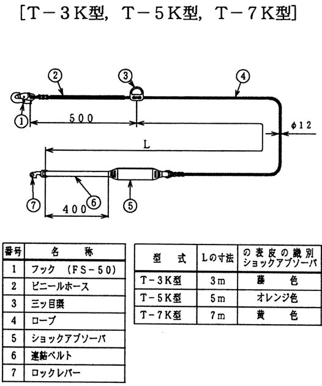
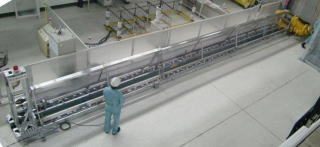

当社で命名した、環境に優しく、より安全な、「K1型移動ロープの部品再利用(リユース)システム」の名前です。
リユースにより、廃棄物を減らして環境の保全に配慮するとともに、痛み易い部品を交換して安全性も向上できると考えています。
K1型移動ロープは、下図の通り7つの部品で構成されています。
このうち、一番早く劣化する「ロープ」を新品に交換して、金具やショックアブソーバを有効利用します。
これまではメーカのみに許された作業でしたが、今回メーカのご協力を得て、当社でも実施することとしました。

安全を支える用具の組立てですから、充分な準備を重ねました。
その概要は、以下の通りです
メーカと同等の技術・技能を有する加工技術者を育成しました。
国内でも珍しい「長尺ロープ用強度試験機」を開発しました。

7mのロープも破断まで確実に引張れます。
もちろん、経年ロープの残存強度確認も可能です。
品質マニュアルの制定、品質管理チームの設置など、日常の品質管理を万全に実施できる体制を構築しました。